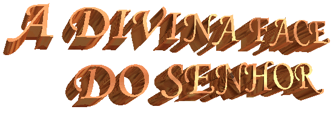
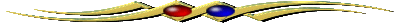
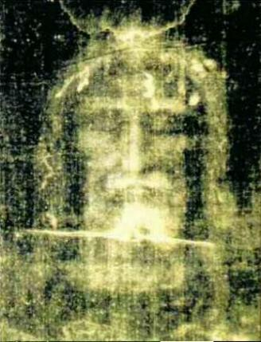
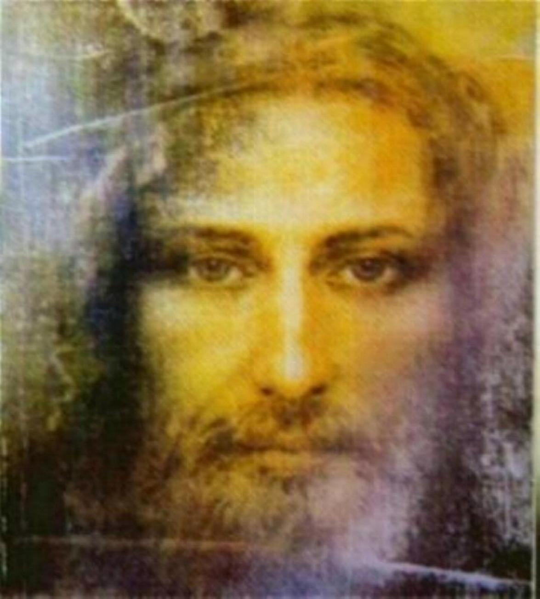
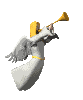

O Sudário mostra a verdadeira Face do FILHO DE DEUS, deformada pelas atrocidades e abominável flagelação a que ELE foi submetido. A riqueza dos detalhes é tão expressiva, que permite perceber a heroica perseverança de JESUS na execução do projeto Divino, para Redimir e Salvar a humanidade de todas as gerações, com o sacrifício de sua própria vida.
= Índice =

CONHECIMENTO DA GLÓRIA DIVINATRAJETÓRIA DA MORTALHA DE TURIM
LINKS + PUBLICIDADE + FIRMAS DE BUSCAS
"E-mail"
Desejando comunicar-se conosco favor utilizar o E-mail: